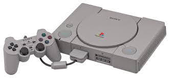

Las Consolas de sobremesa, para su utilización, se tienen que apoyar sobre una superficie plana, los jugadores tienen que manipular unos mandos externos para manejar el videojuego. Además, requieren ser conectadas a un televisor para su visualización y enchufarse a la red eléctrica para la alimentación de la unidad.
PlayStation 1
La primera videoconsola de Sony, y la primera de dicha compañía en ser diseñada por Ken Kutaragi, y es una videoconsola de sobremesa de 32 bits lanzada por Sony Computer Entertainment el 3 de diciembre de 1994 en Japón. Se considera la videoconsola más exitosa de la quinta generación tanto en ventas como en popularidad.

La PlayStation fue lanzada a la venta el 3 de diciembre de 1994 en Japón,5 el 9 de septiembre de 1995 en Estados Unidos y el 29 de septiembre de 1995 en Europa.
Caracteristicas
Volver a Inicio